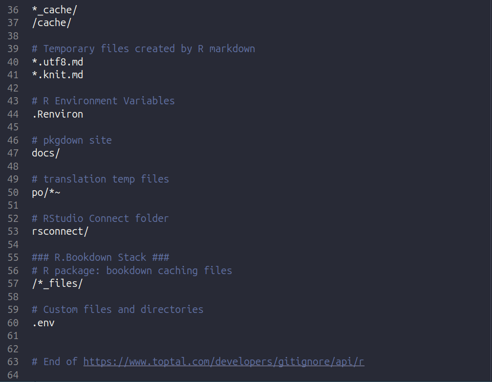

Chapter 2 Project Setup
Here we will go over how to create a local project directory (or folder as it is commonly known) on your own personal computer.
2.1 Create an R Studio Project
Download the latest versions of R and RStudio. As of writing this tutorial, the latest version of R is 4.4.2, and RStudio is ‘2024-12.0.467’.
In RStudio, create a new project (.proj) in a new directory. By using an R project, you can create a new directory to store all of your code scripts and data files, as well as keep track of your workflow. You can find more information here.
- Click the ‘Create git repository’ and ‘use renv’ check boxes.
2.1.1 Git
Git is a version control system, which allows you keep track of changes to your project, and collaborate with colleagues if you use Github.
2.1.2 renv
Renv stands for ‘R Virtual Environment’, which creates reproducible environments for your R projects. Many new data scientists would download all their individual packages into one location, usually the R library. While this global (i.e. accessible anywhere on your computer) library is convenient, certain packages or package versions can conflict with each other, causing errors and preventing you from analyzing your data. With renv, you can download all the packages for your project in your project directory, which will lead to fewer problems due to conflicting packages/versions.
After creating a .R file and loading a library, use renv::snapshot() to update your renv.lock file:
If you are working with collaborators, you’ll then need to commit renv.lock, .Rprofile, renv/settings.json and renv/activate.R so they can work with the same packages and package versions as you.
2.2 Request an API token
To access the CTT Application Programming Interface (API) (i.e. the program to download your data from the CTT servers), you will need an API token. You can request one here.
2.3 Create a ‘.env’ file
For NodeJs and Python projects, many data scientists use environment variables, or a user-defined variable, to store sensitive data such as passwords, API credentials, and other info that should not be publicly shared. These environment variables can then be accessed by the R project without displaying the sensitive information on your R script.
To store the environment variables, use a ‘.env’ file and the R package ‘dotenv’.
Run the following command in an R script or the R console to create a .env file in your project directory and store your CTT API key:
Replace “your_api_key” with your actual API key from your account.celltracktech.com profile.
2.3.2 Add .env file to .gitignore
Finally, you will need to add the .env file to the .gitignore file, so that when you commit changes to your R project the .env file is not included. That way your environmental variables will stay on your computer until you share them with collaborators.
Open the .gitignore file in RStudio and add ‘.env’ (without the quotes) to the file and save it.
 You are now ready to start downloading data!